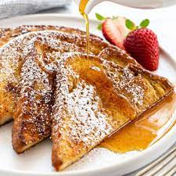

French Toast

Description
Sliced bread soaked in eggs and cream, then pan fried and topped with powdered sugar and syrup.
Ingredients
- eggs
- bread (any type)
- cream
- vanilla extract
- butter
- powdered sugar
- cinnamon
- syrup
- lemon juice
- salt
Steps
- Whisk milk, eggs, vanilla, cinnamon, and salt together in a shallow bowl.
- Lightly butter a griddle and heat over medium-high heat.
- Dunk bread in the egg mixture (eggs, cream, cinnamon, vanilla).
- Transfer the bread to the hot skilled and cook until golden brown on each side (about 3-4 minutes per side.
- Repeat with more pieces of bread until you have the desired amount.
- Top the finished pieces with butter, powdered sugar, a splash of lemon juice, and syrup.